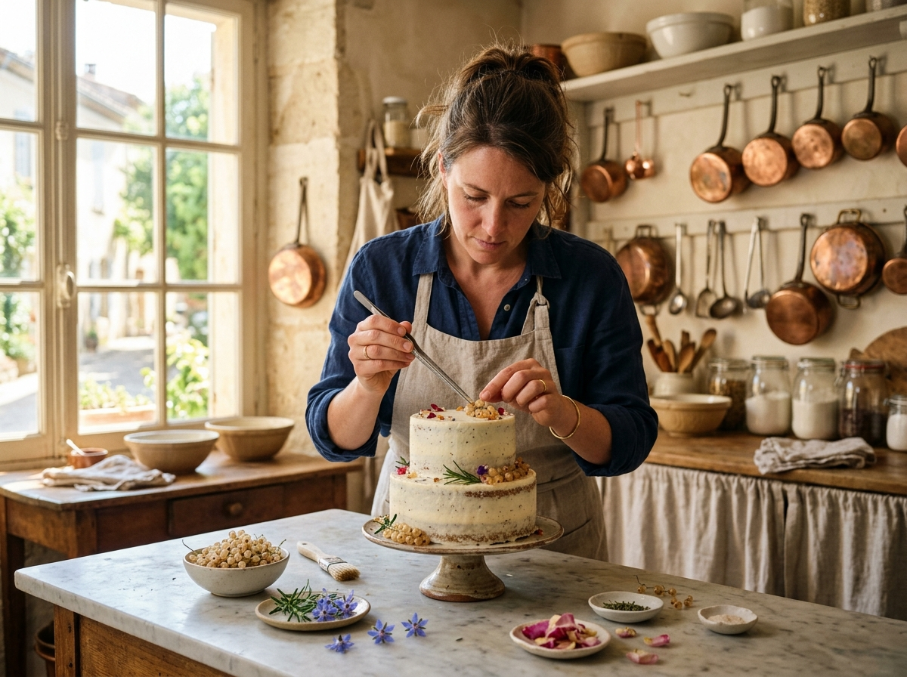

A commitment to edible botany and pure craft.
The Best Home Baker was founded on a singular conviction: celebratory cakes should be as memorable in flavor as they are in architectural presence.
After classical pâtisserie training in Lyon and years working within Michelin-accredited pastry departments, our founder returned to the intimacy of an artisanal home atelier. Here, without the rush of industrial assembly lines, every cake receives the patient, undivided focus it deserves.
We source heirloom flours, churned European butter, and organic botanicals grown in local pesticide-free cottage gardens. We do not use commercial flavorings, premade fillings, or artificial preservatives.
10+ Years
Pâtisserie Practice
1 Commission
Per Weekend Slot

Uncompromising pantry standards.
The foundation of exceptional crumb and texture lies in the integrity of simple, pure agricultural ingredients.
82% Cultured Grass-Fed Butter
We exclusively use slow-churned European cultured butter. The higher butterfat percentage and natural fermentation yield a velvety crumb and an incomparable, silky Swiss meringue buttercream.
Single-Origin Vanilla Pods
We never use imitation vanillin. Whole Madagascar Bourbon and floral Tahitian vanilla beans are split and slow-steeped in milk and syrups, leaving authentic fragrant caviar flecks throughout.
Pesticide-Free Edible Botany
Florals placed on our cakes are certified culinary-grade and organically grown specifically for human consumption. We never use sprayed florist blooms directly against edible surfaces.
Certified studio hygiene and discipline.
Operating as an artisanal home studio requires rigorous adherence to food safety, commercial refrigeration, and cross-contamination protocols.
36-Hour Bake Freshness
Unlike commercial operations that freeze cakes for weeks, your sponge layers are baked from scratch within 36 hours of celebration pickup.
Temperature Stability
Our Swiss meringue buttercream contains real butter that sets firmly in refrigeration and softens to silk at room temperature for cutting.
Food-Grade Dowels
Multi-tier creations feature food-safe internal support pillars and custom baseboards for absolute transport security.
Local Delivery Care
Delivered in climate-controlled transit with non-slip foam footing and on-site positioning by the baker.
Let’s discuss your celebration vision.
We would be honored to create something thoughtful for your guests.
Start Custom Inquiry